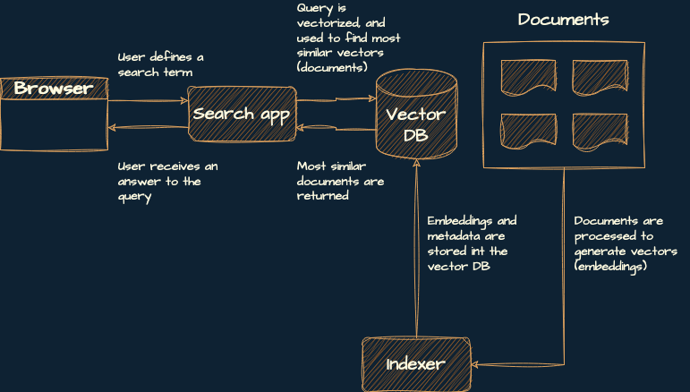
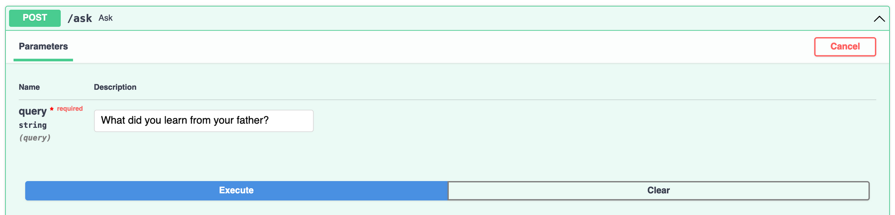
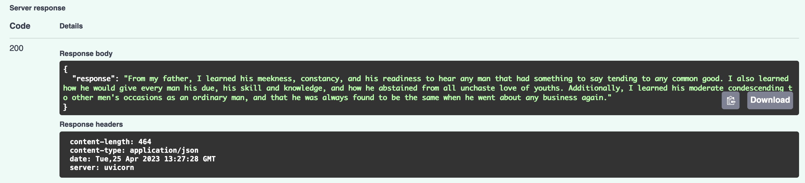

Semantic Search with Elasticsearch, OpenAI, and LangChain
LangChain is the new cool kid on the block. It’s a library designed to help you interact with Large Language Models (LLMs). Up until recently, I was building most things from scratch when working with LLMs, so I decided to give LangChain a try.
After a few projects using it, I’m truly impressed. It simplifies many of the routine tasks associated with working with LLMs, such as extracting text from documents or indexing them in a vector database. If you’re working with LLMs today, LangChain can save you hours of work.
However, one drawback is that its documentation, despite being extensive, can be scattered and difficult for newcomers to comprehend. Moreover, most of the content online focuses on the latest generation of vector databases. Since many organizations still use older, but battle-tested technologies such as Elasticsearch and I decided to write a tutorial using it.
I combined LangChain and Elasticsearch in one of the most common LLM applications: semantic search. In this tutorial, I’ll walk you through building a semantic search service using Elasticsearch, OpenAI, LangChain, and FastAPI. You’ll create an application that lets users ask questions about Marcus Aurelius’ Meditations and provides them with concise answers by extracting the most relevant content from the book.
Let’s dive in!
Prerequisites
You should be familiar with these topics to make the most out of this tutorial:
- What semantic search is.
- How to use Elasticsearch in Python.
- What text embeddings are.
In addition, you must install Docker and create an account at OpenAI.
Designing a Semantic Search Service
You’re going to build a service with three components:
- Indexer: This creates the index, generates the embeddings and the metadata (source and title of the book, in this case), and adds them to the vector database.
- Vector database: This is a database that you use to store and retrieve the embeddings you generate.
- Search app: This is a backend service that uses the user’s search term, generates an embedding from it, and then looks for the most similar embeddings in the vector database.
Here’s a diagram of this architecture:

If you’ve read my previous tutorial on semantic search, you might have noticed that the vectorizer isn’t part of this architecture. I’m purposely skipping it because langchain takes care of that part for you, so you can have the indexer and vectorizer in the same place.
Next, you’ll set up your local environment.
Set Up Your Local Environment
Follow these steps to set up your local environment:
- Install Python 3.10.
- Install Poetry. It’s optional but highly recommended.
- Clone the project’s repository:
From the root folder of the project, install the dependencies:
- Using Poetry: Create the virtual environment in the same directory as the project and install the dependencies:
- Using venv and pip: Create a virtual environment and install the dependencies listed in
requirements.txt:
Open
src/.env-example, add your secret OpenAI key, and save the file as.env.
By now, you’ll have a virtual environment set up with the required libraries and a local copy of the repository. Your project structure should look like this:
semantic-search-elasticsearch-openai-langchain
├── LICENSE
├── README.md
├── poetry.lock
├── pyproject.toml
├── requirements.txt
├── run_elasticsearch.sh
├── src
│ ├── app.py
│ ├── config.py
│ ├── data
│ │ └── Marcus_Aurelius_Antoninus...
│ │ ├── index.html
│ │ ├── metadata.opf
│ │ └── style.css
│ ├── indexer.py
│ └── .env-example
└── .venv/These are the most relevant files and directories in the project:
poetry.lockandpyproject.toml: These files contain the project’s specifications and dependencies and are used by Poetry to create a virtual environment.requirements.txt: This file contains a list of Python packages required by the project.run_elasticsearch_docker.sh: This file contains a bash script used to run an Elasticsearch cluster locally.src/app.py: This file contains the code of the search application.src/config.py: This file contains project configuration specifications such as OpenAI’s API key (read from a.envfile), the paths to the data, and the name of the index.src/data/: This directory contains Meditations as originally downloaded from Wikisource. You’ll use that as the corpus of text for this tutorial.src/indexer.py: This file contains the code you use to create an index and insert the documents in OpenSearch..env-example: This file is typically used for environment variables. In this case, you use it to pass OpenAI’s API key to your application..venv/: This directory contains the project’s virtual environment.
All done! Let’s get going.
Start a Local Elasticsearch Cluster
Before we get into the code, you should start a local Elasticsearch cluster. Open a new terminal, navigate to the project’s root folder, and run:
If everything went well, a lengthy text string will appear on the terminal. For the rest of the tutorial, keep this terminal window open in the background.
Split and Index the Book
In this step, you’ll do two things:
- Process the text from the book by splitting it into chunks of 1,000 tokens.
- Index the text chunks you’ve generated (from now on called documents) in your Elasticsearch cluster.
Take a look at src/indexer.py:
from langchain.document_loaders import BSHTMLLoader
from langchain.embeddings.openai import OpenAIEmbeddings
from langchain.text_splitter import RecursiveCharacterTextSplitter
from langchain.vectorstores import ElasticVectorSearch
from config import Paths, openai_api_key
def main():
loader = BSHTMLLoader(str(Paths.book))
data = loader.load()
text_splitter = RecursiveCharacterTextSplitter.from_tiktoken_encoder(
chunk_size=1000, chunk_overlap=0
)
documents = text_splitter.split_documents(data)
embeddings = OpenAIEmbeddings(openai_api_key=openai_api_key)
db = ElasticVectorSearch.from_documents(
documents,
embeddings,
elasticsearch_url="http://localhost:9200",
index_name="elastic-index",
)
print(db.client.info())
if __name__ == "__main__":
main()This code takes Meditations, splits it into text chunks of 1,000 tokens, and then indexes those chunks in your Elasticsearch cluster. Here’s a detailed breakdown:
- Lines 1 to 4 import the required components from
langchain:BSHTMLLoader: This loader uses BeautifulSoup4 to parse the documents.OpenAIEmbeddings: This component is a wrapper around OpenAI embeddings. It helps you generate embeddings for documents and queries.RecursiveCharacterTextSplitter: This utility function divides the input text by attempting various characters in an order designed to maintain semantically similar content in proximity. The characters used for splitting, in the following order, are:"\n\n","\n"," ","".ElasticSearchVector: This is a wrapper around the Elasticsearch client, that simplifies interacting with your cluster.
- Line 6 imports the relevant configurations from
config.py - Lines 11 and 12 extract the book’s text using
BSHTMLLoader. - Lines 13 to 16 initialize the text splitter and split the text in chunks of no more than 1,000 tokens. In this case, you use
tiktokento count the tokens but you can also use different length functions, such as counting the number of characters instead of tokens or a different tokenizing function. - Lines 18 to 25 initialize the embeddings function, create a new index, and index the documents generated by the text splitter. In
elasticsearch_url, you specify the port where your application is running locally, and inindex_nameyou specify the name of the index you’ll use. Finally, you print the Elasticsearch client information.
To run this script, open a terminal, activate the virtual environment, and from src folder of your project, run the following command:
If everything went well, you should get an output that looks similar to this (but not properly formatted):
{
"name": "0e1113eb2915",
"cluster_name": "docker-cluster",
"cluster_uuid": "og6mFMqwQtaJiv_3E_q2YQ",
"version": {
"number": "8.7.0",
"build_flavor": "default",
"build_type": "docker",
"build_hash": "09520b59b6bc1057340b55750186466ea715e30e",
"build_date": "2023-03-27T16:31:09.816451435Z",
"build_snapshot": false,
"lucene_version": "9.5.0",
"minimum_wire_compatibility_version": "7.17.0",
"minimum_index_compatibility_version": "7.0.0"
},
"tagline": "You Know, for Search"
}Next, let’s create a simple FastAPI app, to interact with your cluster.
Create a Search Application
In this step, you’ll create a simple application to interact with Meditations. You’ll connect to the Elasticsearch cluster, initialize the Retrieval Questioning/Answering Chain, and create an /ask endpoint that lets the user interact with the app.
Take a look at the code of src/app.py:
from fastapi import FastAPI
from langchain.chains import RetrievalQA
from langchain.chat_models import ChatOpenAI
from langchain.embeddings.openai import OpenAIEmbeddings
from langchain.vectorstores import ElasticVectorSearch
from config import openai_api_key
embedding = OpenAIEmbeddings(openai_api_key=openai_api_key)
db = ElasticVectorSearch(
elasticsearch_url="http://localhost:9200",
index_name="elastic-index",
embedding=embedding,
)
qa = RetrievalQA.from_chain_type(
llm=ChatOpenAI(temperature=0),
chain_type="stuff",
retriever=db.as_retriever(),
)
app = FastAPI()
@app.get("/")
def index():
return {
"message": "Make a post request to /ask to ask questions about Meditations by Marcus Aurelius"
}
@app.post("/ask")
def ask(query: str):
response = qa.run(query)
return {
"response": response,
}This code lets the user ask questions about Marcus Aurelius’ Meditations and provides answers back to the users. Let me show you how it works:
- Lines 1 to 5 import the required libraries:
FastAPI: This class initializes the app.RetrievalQA: This is a chain that allows you to ask questions about documents in a vector database. It finds the most relevant documents based on your question and generates an answer from them.ChatOpenAI: This is a wrapper around OpenAI’s chat models.OpenAIEmbeddingsandElasticVectorSearch: These are the same wrappers discussed in the previous section.
- Line 7 imports the OpenAI secret key.
- Lines 9 to 15 initialize the Elasticsearch cluster using OpenAI embeddings.
- Lines 16 to 20 initialize the
RetrievalQAchain with the following parameters:llm: Specifies the LLM used to run prompts defined in the chain.chain_type: Defines how documents are retrieved and processed from the vector database. By specifyingstuff, documents will be retrieved and passed to the chain to answer the question as-is. Alternatively, you can usemap_reduceormap_rerankfor additional processing before answering the question, but these methods use more API calls. For more information, consult the langchain documentation.retriever: Specifies the vector database used by the chain to retrieve documents.
- Lines 22 to 36 initialize the FastAPI app and define two endpoints. The
/endpoint provides users with information on how to use the application. The/askendpoint takes a user’s question (queryparameter) and returns an answer using the previously initialized chain.
Finally, you can run the app from the terminal (using your virtual environment):
Then, visit http://127.0.0.1:8000/docs, and test /ask by making a question about the book:

If everything went well, you should get something like this:

That’s it! You now have your own semantic search service up and running, based on Elasticsearch, OpenAI, Langchain, and FastAPI.
Going to Production
Moving to production can vary greatly for different software products. However, at a minimum, you should:
- Build appropriate data ingestion and processing pipelines. When adding new data, you generally do not want to rebuild the index, as you did in this tutorial.
- Use a production-ready Elasticsearch-managed instance or a Docker image optimized for production. The instance used in this tutorial was intended for testing and development purposes only.
- Choose a deployment strategy that suits your organization’s needs. For example, I often use NGINX with Gunicorn and Uvicorn workers for small projects.
Conclusion
Way to go! In this tutorial, you’ve learned how to build a semantic search engine using Elasticsearch, OpenAI, and Langchain.
In particular, you’ve learned:
- How to structure a semantic search service.
- How to use LangChain to split and index documents.
- How to use Elasticsearch as a vector database with LangChain.
- How to use the Retrieval Questioning/Answering Chain to answer questions with a vector database.
- What you should consider when productizing this type of application.
Hope you found this tutorial useful. Let me know if you have any questions!
All the code for this tutorial is available on GitHub.
Citation
@online{castillo2023,
author = {Castillo, Dylan},
title = {Semantic {Search} with {Elasticsearch,} {OpenAI,} and
{LangChain}},
date = {2023-04-27},
url = {https://dylancastillo.co/posts/semantic-search-elasticsearch-openai-langchain.html},
langid = {en}
}